A newly introduced customizable user interface has several nice features that allow complete control over the look and feel of the AmiBroker user interface.
Advanced nested docking / tear-off tabs
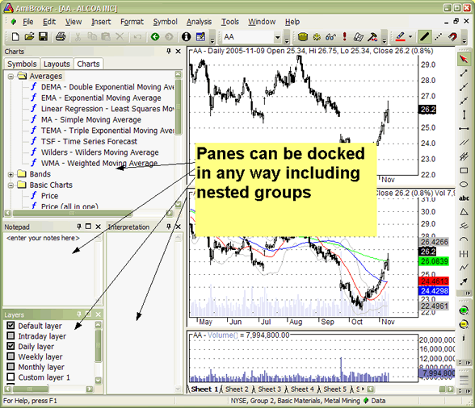
To dock a pane into any side of the application or as a tab, simply click on the docking window caption bar and drag it. If you do this, docking stickers will appear to make it easy to choose the destination, as shown below
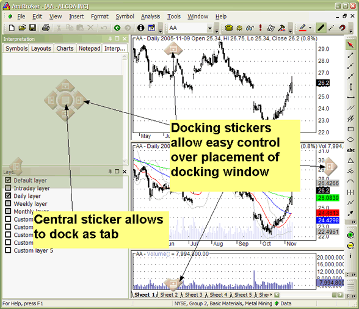
You can also click on a docking pane tab and drag it (tear it off) and dock it as a separate window. This way, you can arrange all docking windows either as separate windows, as tabs, or as a mixture of these two approaches. You can also make a window/tab float by dragging it while holding down the CTRL key.
Sliding Auto-hide panes
Another very useful feature that allows you to conserve precious real estate on your monitor is auto-hiding of panes. To control (switch on/off) this feature, there is a pin button in the upper right corner of each docking window. If you unpin it, the pane will automatically hide when it loses focus.
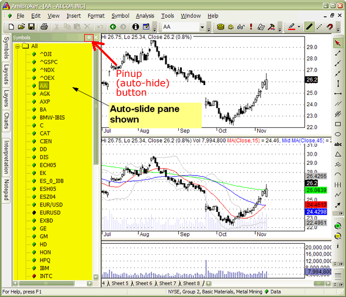
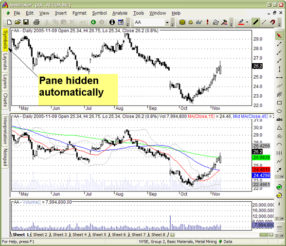
Advanced customizable toolbars, menus, and keyboard shortcuts
The new user interface allows full user control over the appearance, layout, and position of all toolbars, buttons, and menus. It allows you to add your own buttons, remove or rearrange existing ones. You can also define or redefine new or existing keyboard shortcuts. All these customization features are available from the Tools->Customize menu or from the Customize chevron menu.
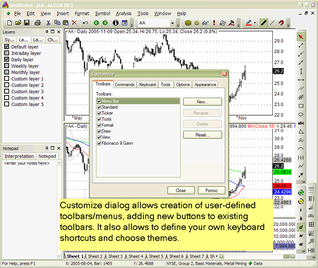
The chevron menu is available from a little arrow button placed at the end of the toolbar strip. It allows access to auto-hidden elements of the toolbar, as well as customization features.
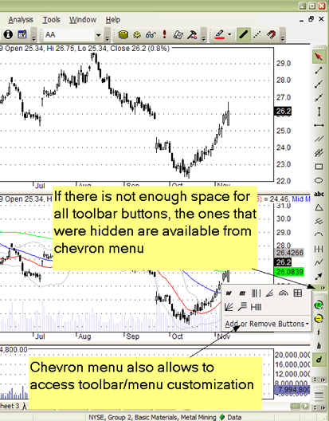
The 'Add or Remove Buttons' submenu allows you to quickly show or hide toolbar buttons according to your preference. In customization mode (when you enter it using Tools->Customize), you can also move buttons around to change the order in which they appear, and you can also resize edit fields and combo fields (such as the ticker selection field) by selecting them first and resizing the border that will appear after making the selection.
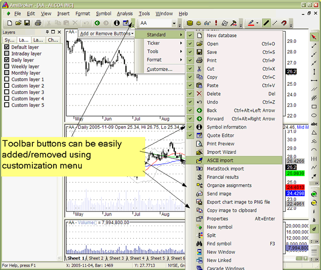
You can even add and design your own buttons using a built-in image editor:
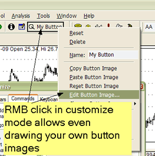
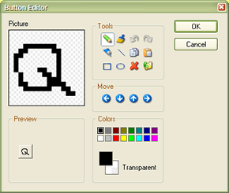
Themed appearance
AmiBroker also allows you to pick your preferred user interface "appearance" or "theme" to suit your personal taste.
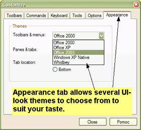
MDI (multiple document interface) tabs
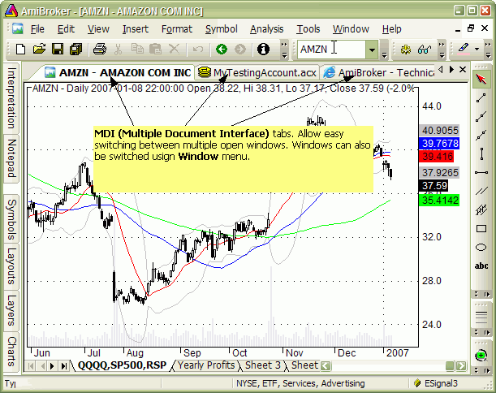
AmiBroker is a multiple document interface (MDI) application. In short, it means
that it allows you to open and work with multiple windows at the same time.
To learn more about what MDI is, you may check this article: http://en.wikipedia.org/wiki/Multiple_document_interface
Now, MDI tabs (shown in the picture above) are just an additional
way to switch between multiple open windows
(in addition to the Window menu where the list of open document windows is
also available).
It is important to understand that MDI tabs are not "user-definable" in
the sense that you cannot define their names freely, unlike
chart sheets (which are definable). Their names
are automatically derived from the document/window name. For chart windows, the
name is always in the format: Symbol - FullName;
web browser windows use the HTML page title (as defined by the HTML document); account
manager windows use the actual account file name (that you can choose when you
save them).
MDI tabs are basically document window switchers (like the Windows taskbar at
the bottom), and they are automatically managed by AmiBroker whenever you open
or close a window.
And it works using the exact same idea as the Windows taskbar. Let us look at
this analogy more closely:
When you use the Windows Taskbar:
- you open an application - a new button in the taskbar appears
- and you can switch between open applications using taskbar buttons.
- you cannot rename the button because it represents the application name.
- and you need to be careful with opening too many applications because
all open applications consume system resources
Now, using AmiBroker MDI tabs:
- you open a document (window) -> a new button (tab) appears
- you can switch between open windows using buttons (tabs)
- you cannot rename the button because it represents the document/window name
- and you need to be careful with opening too many documents/windows
because all open documents consume system resources
You can turn off MDI tabs by unchecking the "Show MDI tabs" checkbox in the Tools->Customize, Appearance page, as shown below:
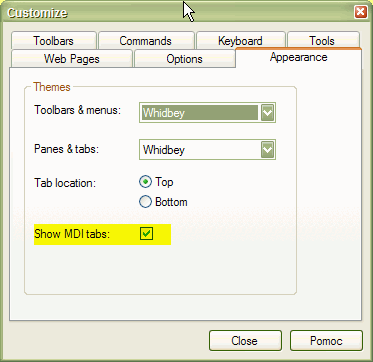
For more information see Houston conference presentation: http://www.amibroker.com/docs/Houston1.pdf (PDF format), http://www.amibroker.com/docs/Houston1.html (Flash format).